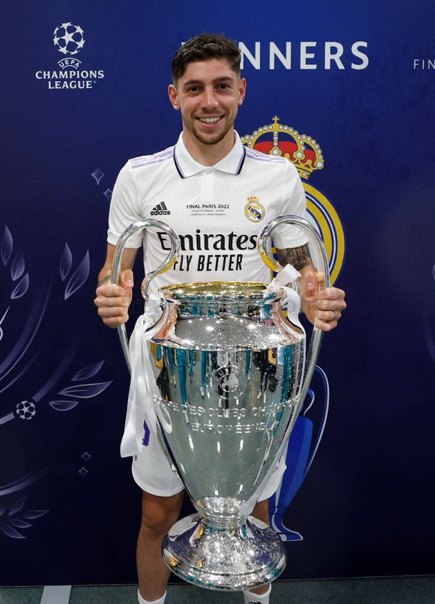

|  | Santiago Federico Valverde Dipetta, abrégé Federico Valverde, né le 22 juillet 1998 à Montevideo en Uruguay, est un footballeur international uruguayen qui évolue au poste de milieu de terrain au Real Madrid. Il possède également la nationalité espagnole depuis 2019 Pendant la saison 2019-2020 il explose avec le coaching de Zinédine Zidane et devient un élément indéboulonnable du jeu madrilène. Durant la finale de la Supercoupe d'Espagne, il effectue un tacle salvateur sur Álvaro Morata empêchant ce dernier de filer au but, il sera exclu mais sera élu homme du match de cette finale. Pendant la saison 2021 2022 du Real Madrid, il est souvent utilisé dans l'aile droite de l'attaque par Carlo Ancelotti. Il réalise une très bonne saison et sera passeur décisif lors de la finale de la ligue des champions pour Vinicius. Il est désormais un élément indispensable pour le Real Madrid. |